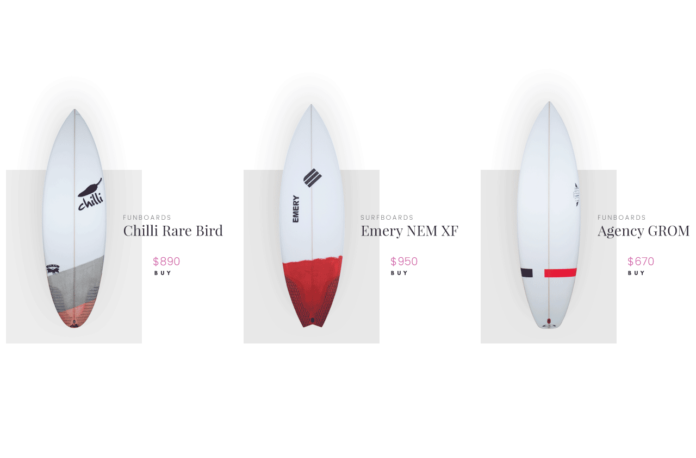

| Online Surf & SUP Shop |
Beginner surfboards are designed to make surfing fun and simple. They have additional volume for easy paddling, and subtle design features that provide a stable platform so the rider can confidently jump to their feet. For safety reasons beginner boards are often made with softer materials, making them perfect for novice riders as they develop the basic skills of surfing and progress towards the intermediate level. "The Rocket9 outline has the wide point forward a bit and the tail is pulled in making it super snappy and maneuverable. The swallow gives a great fast release as well. One of the major desires for this board was I wanted was to go fast and then turn hard when I wanted in waves ranging from super average California beach breaks all the way to grinding little tubes. It’s one of the most versatile boards I have ever ridden." - Dane Gudauskas The Twin Fin has a retro 70’s feel, with updated performance qualities. It was originally designed and hand shaped by Britt Merrick when asked to compete in a surf contest where shapers ride retro boards they have created themselves. Inspired by a twin fin that his father Al had shaped for himself in the late 70’s, and that a friend had recently found at a garage sale, Britt took a template off it, drew it on a blank and updated the rocker to have a more modern feel with added positive drive and carving ability. Thus, the new CI Twin Fin was born. The Twin Fin has been tested by Britt, Dane and CI Factory pilots in everything from weak beach breaks to good Rincon and has proved to be a fast and fun wave catching machine. To offset negative characteristics of a usual high-volume retro design, the Twin Fin’s rails are tapered and relatively thin feeling for added sensitivity and responsiveness. |
| Surfing is the most blissful experience you can have on this planet, a taste of heaven. |